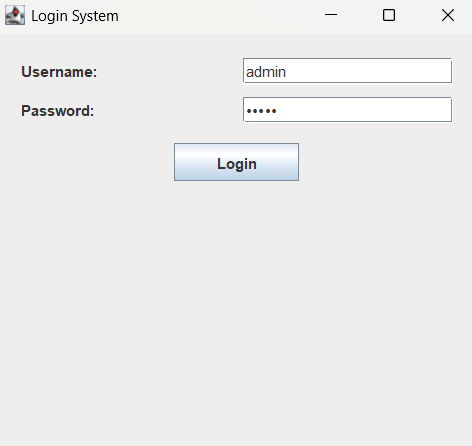
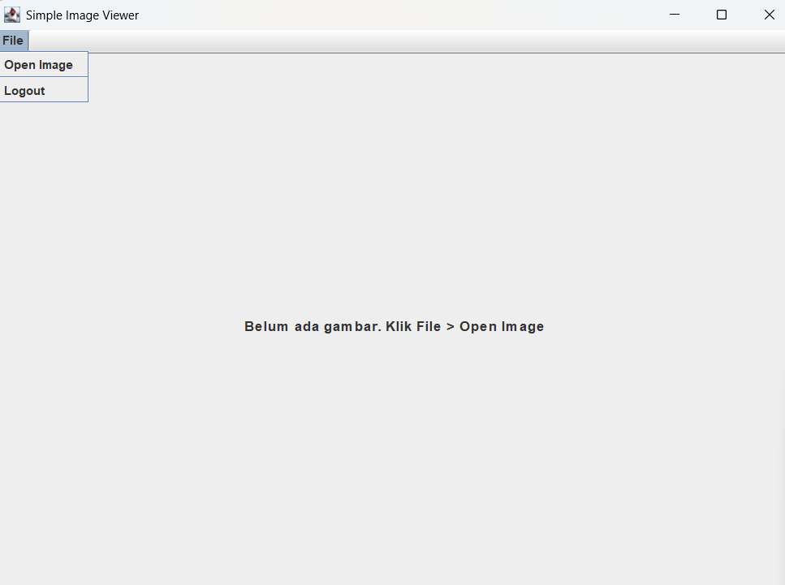

Aplikasi terdiri dari dua frame yang saling terhubung:
Klik gambar untuk memperbesar.
Tampilan awal saat program dijalankan.
Tampilan setelah berhasil login dan memilih gambar.
Menangani validasi user dan transisi ke ImageViewer.
import javax.swing.*;
import java.awt.*;
import java.awt.event.*;
public class LoginFrame extends JFrame implements ActionListener {
private JTextField textUser;
private JPasswordField textPass;
private JButton buttonLogin;
public LoginFrame() {
setTitle("Login System");
// Ukuran diperbesar agar nyaman
setSize(400, 250);
setDefaultCloseOperation(JFrame.EXIT_ON_CLOSE);
setLocationRelativeTo(null);
setLayout(new GridLayout(4, 1));
JPanel panelInput = new JPanel(new GridLayout(2, 2, 10, 10));
panelInput.setBorder(BorderFactory.createEmptyBorder(20, 20, 10, 20));
panelInput.add(new JLabel("Username:"));
textUser = new JTextField();
panelInput.add(textUser);
panelInput.add(new JLabel("Password:"));
textPass = new JPasswordField();
panelInput.add(textPass);
add(panelInput);
JPanel panelButton = new JPanel();
buttonLogin = new JButton("Login");
buttonLogin.setPreferredSize(new Dimension(100, 30));
buttonLogin.addActionListener(this);
panelButton.add(buttonLogin);
add(panelButton);
setVisible(true);
}
public void actionPerformed(ActionEvent e) {
String user = textUser.getText();
String pass = new String(textPass.getPassword());
if (user.equals("admin") && pass.equals("admin")) {
JOptionPane.showMessageDialog(this, "Login Berhasil! Selamat Datang.");
this.dispose();
new ImageViewer();
} else {
JOptionPane.showMessageDialog(this, "Username atau Password salah!", "Akses Ditolak", JOptionPane.ERROR_MESSAGE);
}
}
public static void main(String[] args) {
new LoginFrame();
}
}
Menangani pembukaan file gambar dan penampilannya di layar.
import javax.swing.*;
import java.awt.*;
import java.io.File;
public class ImageViewer extends JFrame {
private JLabel imageLabel;
private JFileChooser fileChooser;
public ImageViewer() {
setTitle("Simple Image Viewer");
setSize(800, 600);
setDefaultCloseOperation(JFrame.EXIT_ON_CLOSE);
setLocationRelativeTo(null);
JMenuBar menuBar = new JMenuBar();
JMenu menuFile = new JMenu("File");
JMenuItem itemOpen = new JMenuItem("Open Image");
JMenuItem itemExit = new JMenuItem("Logout");
itemOpen.addActionListener(e -> bukaFile());
itemExit.addActionListener(e -> {
this.dispose();
new LoginFrame();
});
menuFile.add(itemOpen);
menuFile.addSeparator();
menuFile.add(itemExit);
menuBar.add(menuFile);
setJMenuBar(menuBar);
imageLabel = new JLabel("Belum ada gambar. Klik File > Open Image", SwingConstants.CENTER);
imageLabel.setFont(new Font("Arial", Font.BOLD, 14));
add(new JScrollPane(imageLabel));
fileChooser = new JFileChooser();
setVisible(true);
}
private void bukaFile() {
if (fileChooser.showOpenDialog(this) == JFileChooser.APPROVE_OPTION) {
File file = fileChooser.getSelectedFile();
ImageIcon icon = new ImageIcon(file.getPath());
// Logic scaling gambar agar pas window
int w = this.getContentPane().getWidth();
int h = this.getContentPane().getHeight();
if (w == 0) w = 800;
if (h == 0) h = 600;
Image img = icon.getImage();
Image newImg = img.getScaledInstance(w - 20, h - 20, java.awt.Image.SCALE_SMOOTH);
imageLabel.setIcon(new ImageIcon(newImg));
imageLabel.setText("");
setTitle("Image Viewer - " + file.getName());
}
}
public static void main(String[] args) {
new ImageViewer();
}
}